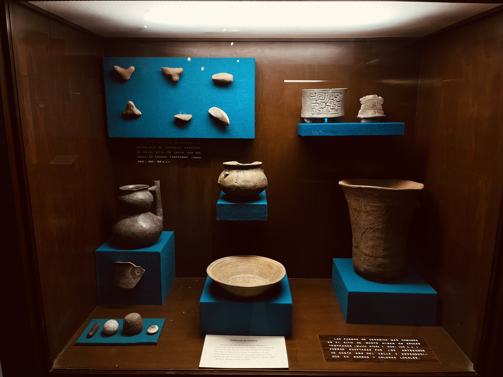
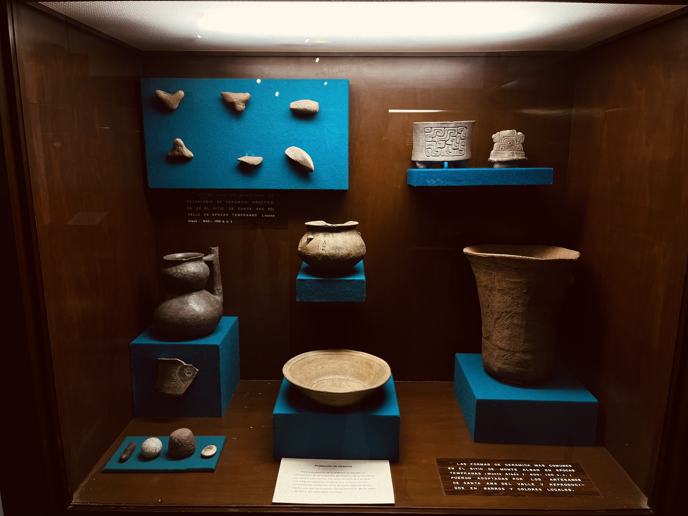
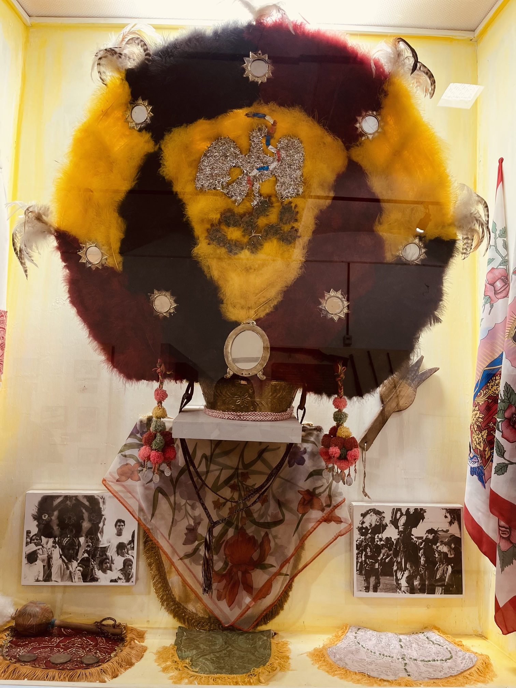
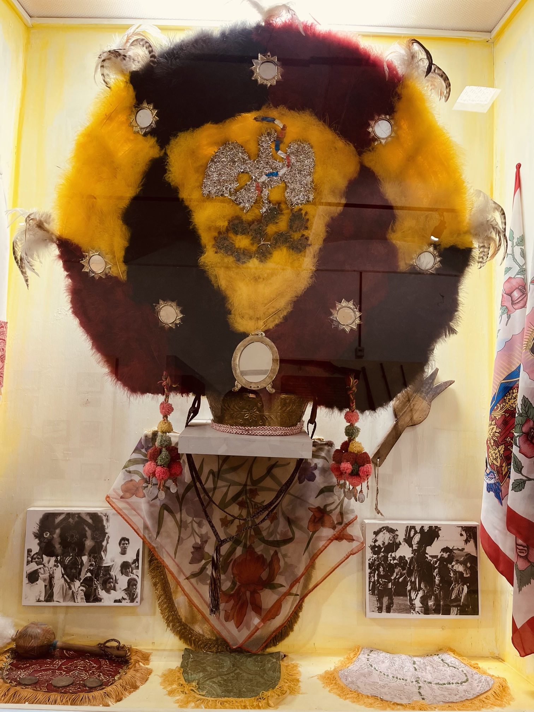
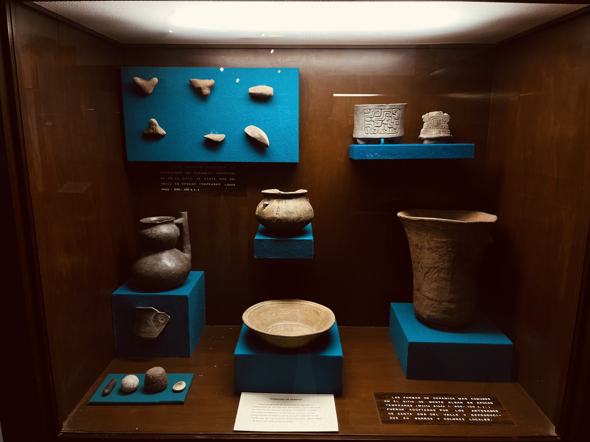
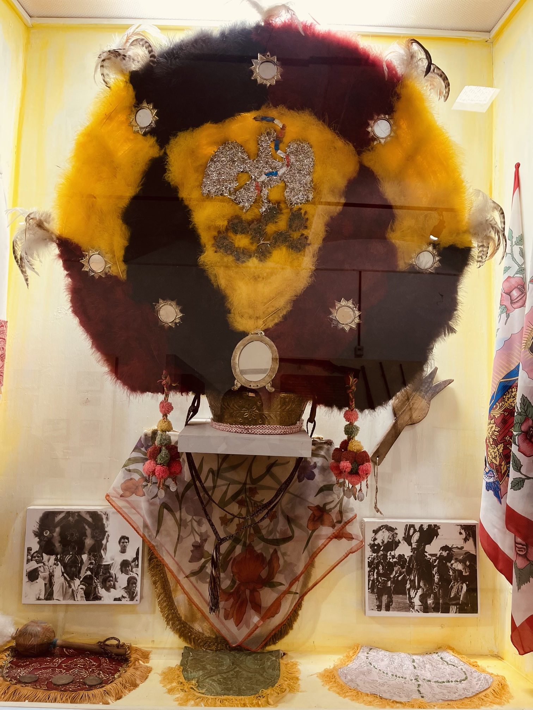

Galería de Esculturas
 


 

Es una experiencia única para explorar la cultura local de la región. Ofrecemos una variedad de exposiciones y eventos educativos para ayudar a todos los visitantes a comprender y disfrutar la cultura del lugar. Ven y descubre la rica historia y tradiciones de la región de Santa Ana Del Valle.


Visitar el Museo Comunitario Incluyente Shan-Dany en Santa Ana Del Valle en México es una experiencia única. La exhibición se enfoca en la cultura local y la historia de la comunidad. Los guías son muy amables y serviciales, se siente un ambiente muy cómodo durante toda la visita. Se recomienda altamente para cualquier persona interesada en aprender más sobre la cultura mexicana.
VISITA NUESTRO RECORRIDO VIRTUAL